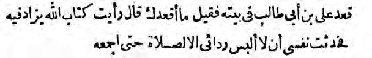
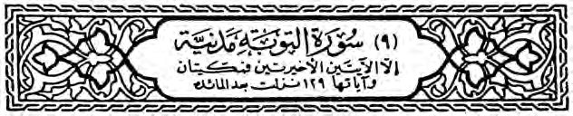
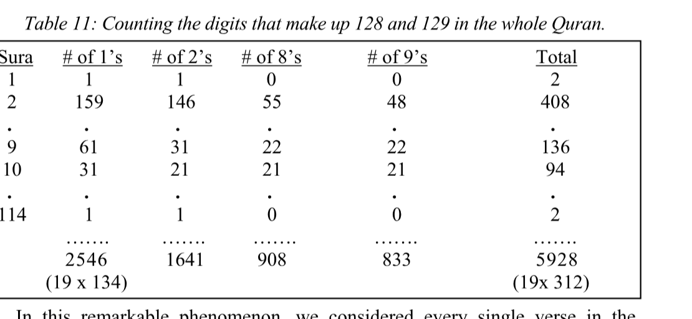
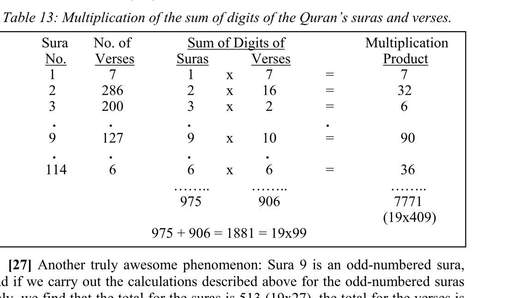
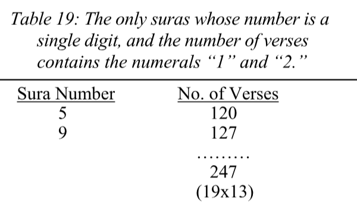
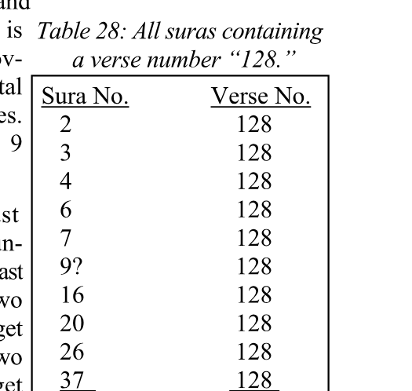
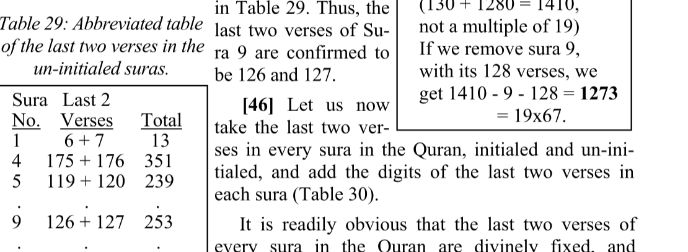
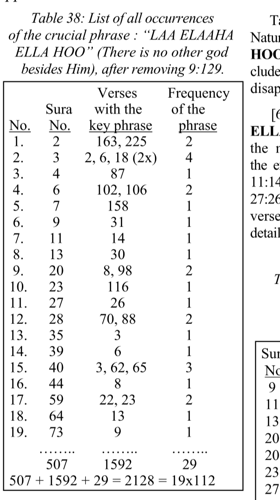
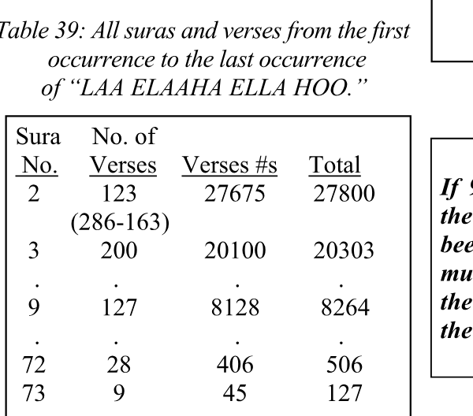
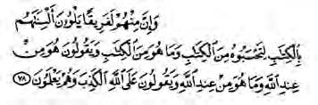

APPENDIX 24
A superhuman mathematical system pervades the Quran and serves to guard and authenticate every element in it.
Nineteen years after the Prophet’s death, some scribes injected two false verses at the end of Sura 9, the last sura revealed in Medina. The evidence presented in this Appendix incontrovertibly removes these human injections, restores the Quran to its pristine purity, and illustrates a major function of the Quran’s mathematical code, namely, to protect the Quran from the slightest tampering. Thus, the code rejects ONLY the false injections 9:128-129.
Surely, we have revealed this scripture, and surely, we will preserve it.
[ 15:9 ]
The Quran is God’s Final Testament. Hence the divine pledge to keep it perfectly preserved. To assure us of both the divine authorship, and the perfect preservation of the Quran, the Almighty author has rendered the Quran mathematically composed. As proven by the physical evidence in Appendix 1, such mathematical composition is far beyond human capabilities. The slightest violation of God’s Final Testament is destined to stand out in glaring disharmony. A deviation by only 1—one sura, one verse, one word, even one letter—is immediately exposed.
Nineteen years after the Prophet Muhammad’s death, during the reign of Khalifa ‘Uthman, a committee of scribes was appointed to make several copies of the Quran to be dispatched to the new Muslim lands. The copies were to be made from the original Quran which was written by Muhammad’s hand (Appendix 28).
This committee was supervised by ‘Uthman Ibn ‘Affaan, ‘Ali Ibn Abi Taaleb, Zeid Ibn Thaabet, Ubayy Ibn Ka‘ab, ‘Abdullah Ibn Al-Zubair, Sa‘eed Ibn Al-‘Aas, and ‘Abdul Rahman Ibn Al-Haareth Ibn Heshaam. The Prophet, of course, had written the Quran in its chronological order of revelation (Appendix 23), together with the necessary instructions to place every piece in its proper position. The last sura revealed in Medina was Sura 9. Only Sura 110, a very short sura, was revealed after Sura 9, in Mina.
The committee of scribes finally came to Sura 9, and put it in its proper place. One of the scribes suggested adding a couple of verses to honor the Prophet. The majority of scribes agreed. ‘Ali was outraged. He vehemently maintained that the word of God, written down by the hand of His final prophet, must never be altered.
Ali’s protest is documented in many references, but I cite and reproduce here the classic reference AL ITQAAN FEE ’ULUM AL QURAN by Jalaluddin Al-Suyuty, Al-Azhareyyah Press, Cairo, Egypt, 1318 AH, Page 59 [see Insert 1].

Translation: ‘Ali was asked: “Why are you staying home?” He said, “Something has been added to the Quran, and I have pledged never to put on my street clothes, except for the prayer, until the Quran is restored.”
[ Insert 1 ]
The horrendous dimensions of this crime can be realized once we look at the consequences:
The distorters of the Quran finally won the war, and the “official” history that came to us represented the victors’ point of view. This apparent victory for God’s enemies was, of course, in accordance with God’s will. In just two decades after the Prophet’s death, the idol worshipers who were defeated by the Prophet in the conquest of Mecca (632 AD) reverted to idolatry. Ironically, this time around their idol was the Prophet himself. Such idol worshipers obviously did not deserve to possess the pure Quran. Hence the blessed martyrdom of the true believers who tried to restore the Quran, and the apparent victory for the distorters of God’s word.
The first peace time ruler after this lengthy and disastrous war was Marwan Ibn Al Hakam (died 65 AH/684 AD). One of the first duties he performed was to destroy the original Quran, the one that was so scrupulously written by the Prophet’s own hand, “fearing it might become the cause of NEW disputes” [see ‘ULUM AL-QURAN, by Ahmad von Denffer, Islamic Foundation, Leicester, United Kingdom, 1983, Page 56]. The question an intelligent person must ask is: “If the original Quran were identical to the Quran in circulation at that time, why did Marwan Ibn Al-Hakam have to destroy it?!”
Upon examining the oldest Islamic references, we realize that the false injections, 9:128-129, were always suspect. For example, we read in Bukhary’s famous Hadith, and Al-Suyuty’s famous Itqaan, that every single verse in the Quran was verified by a multiplicity of witnesses “except Verses 128 and 129 of Sura 9; they were found only with Khuzeimah Ibn Thaabet Al-Ansaary.” When some people questioned this improper exception, someone came up with a Hadith stating that “the testimony of Khuzeimah equals the testimony of two men!!!”
Strangely, the false injections 9:128-129 are labeled in the traditional Quran printings as “Meccan” [see Insert 2].

The Title Figure of Sura 9 from a standard Quran, showing that this sura is Medinan, “except for the last two verses; they are Meccan”!!!
[Insert 2 ]
How could these ‘Meccan’ verses be found with Khuzeimah, a late ‘Medinan’ Muslim?! How could a Medinan sura contain Meccan verses, when the universal convention has been to label as ‘Medinan’ all revelations after the Prophet’s Hijerah from Mecca??!! Despite these discrepancies, plus many more glaring contradictions associated with Verses 9:128-129, no one dared to question their authenticity. The discovery of the Quran’s mathematical code in 1974, however, ushered in a new era where the authenticity of every element in the Quran is proven (Appendix 1).
As it turns out, the injection of the two false Verses 9:128-129 resulted in:
The translation of the two false verses is shown in Insert 3:
“A messenger has come to you from among you who wants no hardship to afflict you, and cares about you, and is compassionate towards the believers, merciful. If they turn away, then say, ‘Sufficient for me is God, there is no god except He. I put my trust in Him. He is the Lord with the great throne.’ ”
[Insert 3 ]
[1] The first violation of the Quran’s code by Verses 9:128-129 appeared when the count of the word “God” (Allah) in the Quran was found to be 2699, which is not a multiple of 19, unless we remove one. The count of the word “God” is shown at the bottom of each page in this translation. The total shown at the end of the Quran is 2698, 19x142, because the false injections 9:128-129 have been removed.
[2] The sum of all the verse numbers where the word “God” occurs is 118123, or 19x6217. This total is obtained by adding the numbers of verses wherever the word “God” is found. If the false Verse 9:129 is included, this phenomenon disappears.
[3] As shown at the end of Sura 9 in this translation, the total occurrence of the word “God” to the end of Sura 9 is 1273, 19x67. If the false injections 9:128- 129 were included, the total would have become 1274, not a multiple of 19.
[4] The occurrence of the “God” from the first Quranic initial (“A.L.M.” of 2:1) to the last initial (“N.” of 68:1) totals 2641, or 19x139. Since it is easier to list the suras outside the initialed section of the Quran, Table shows the 57 occurrences of the word “God” in that section. Subtracting from the total occurrence of the word “God” gives us 2698-57 = 2641 19x139, from the first initial to the last initial. If the human injections 9:128 and 129 were included, the count of the word “God” in the initialed section would have become 2642, not a multiple of 19.
| Sura No. | No. of “God” | Sura No. | No. of “God” |
|---|---|---|---|
| 1 | 2 | 84 | 1 |
| 69 | 1 | 85 | 3 |
| 70 | 1 | 87 | 1 |
| 71 | 7 | 88 | 1 |
| 72 | 10 | 91 | 2 |
| 73 | 7 | 95 | 1 |
| 74 | 3 | 96 | 1 |
| 76 | 5 | 98 | 3 |
| 79 | 1 | 104 | 1 |
| 81 | 1 | 110 | 2 |
| 82 | 1 | 112 | 2 |
| 57 | |||
| 19x3 |
[5] Sura 9 is an un-initialed sura, and if we look at the 85 un-initialed suras, we find that the word “God” occurs in 57 of these suras, 19x3. The total number of verses in the suras where the “God” is found is 1045, 19x55. If 9:128- 129 were included, the verses containing the word “God” would increase by 1.
[6] The word “God” from the missing Basmalah (Sura 9) to the extra malah (Sura 27) occurs in 513 verses, 19x27, within 19 suras (Table 2). If the false Verses 9:128-129 were included, the number of verses containing the word “God” would have become 514, and this phenomenon would have disappeared.
| No. | Sura No. | No. of Verses with “God” |
|---|---|---|
| 1. | 9 | 100 |
| 2. | 10 | 49 |
| 3. | 11 | 33 |
| 4. | 12 | 34 |
| 5. | 13 | 23 |
| 6. | 14 | 28 |
| 7. | 15 | 2 |
| 8. | 16 | 64 |
| 9. | 17 | 10 |
| 10. | 18 | 14 |
| 11. | 19 | 8 |
| 12. | 20 | 6 |
| 13. | 21 | 5 |
| 14. | 22 | 50 |
| 15. | 23 | 12 |
| 16. | 24 | 50 |
| 17. | 25 | 6 |
| 18. | 26 | 13 |
| 19. | 27 | 6 |
| …… | …… | …… |
| 19 | 342 | 513 |
No. of suras = 19, Total of sura numbers = 342 = 19x18
Total of verses = 513 = 19x27.
[7] The word “Elaah” which means “god” occurs in Verses 9:129. The total occurrence of this word in the Quran is 95, 19x5. The inclusion of 9:128-129 causes this word to increase by 1, to 96.
[8] The INDEX TO THE WORDS OF THE QURAN, (Messenger) words. One of these words is in 9:128. By removing this false verse, 115 “Rasool” words remain. Another from counting is in 12:50, since it refers to the “messenger of Pharaoh,” not the messenger of God. Thus, the total occurrence of
[9] Another important word that occurs in the false Verses 9:128-129 is the word “Raheem” (Merciful). This word is used in the Quran exclusively as a name of God, and its total count is 114,19x6, after removing the word of 9:128, which refers to the prophet. According to 7:188, 10:49, and 72:21 the Prophet did not possess any power of mercy.
[10] The INDEX lists 22 occurrences of the word “ removing the false injection 9:129, and the “ 12:100, and the “ ‘Arsh” of the Queen of Sheba (27:23), we end up with 19 “ ‘Arsh” words. This proves that the word “ the Quran.
[11] The Quranic command “Qul the word “Qaaloo” (They said) occurs the same number of times, 332. Since the false Verse 9:129 contains the word “ destroyed this typical Quranic phenomenon.
[12] The Quran contains 6234 numbered verses and 112 un-numbered verses (Basmalahs). Thus, the total number of verses in the Quran is 6346, 19x334. The false Verses 9:128-129 violate this important criterion of the Quran’s code.
[13] In addition to violating the numbers of words as listed above, 9:128-129 violate the Quran’s mathematical structure. When we add the number of verses in each sura, plus the sum of verse numbers (1 + 2 + 3 +... + n, where n = number of verses), plus the number of each sura, the cumulative total for the whole Quran comes to 346199, or 19x19x959. phenomenon confirms the authenticity of every verse in the Quran, while excluding 9:128-129. Table 3 is an abbreviated illustration of the calculations of Item 13. This phenomenon is impossible false Verses 9:128-129 are included.
| Sura No. | No. of Verses | Sum of Verse #’s | Total |
|---|---|---|---|
| 1 | 7 | 28 | 36 |
| 2 | 286 | 41041 | 41329 |
| . . . . | |||
| 9 | 127 | 8128 | 8264 |
| . . . . | |||
| 114 | 6 | 21 | 141 |
| 6555 | 6234 | 333410 | |
| 346199 | |||
| (19 x 19 x 959) |
[14] When we carry out the same calculations as in Item 13 above, but for the 85 un-initialed suras only, which include Sura 9, the cumulative total is also a multiple of 19. The cumulative total for all un-initialed suras is 156066, or 19x8214. This result depends on the fact that Sura 9 consists of 127 verses, not 129. The data are shown in Table 4. The false verses would have destroyed this criterion.
| Sura No. | No. of Verses | Sum of Verse #’s | Total |
|---|---|---|---|
| 1 | 7 | 28 | 36 |
| 4 | 176 | 15576 | 15756 |
| . . . . | |||
| 9 | 127 | 8128 | 8264 |
| . . . . | |||
| 114 | 6 | 21 | 141 |
| 156066 | |||
| 156066 = (19x8214) |
[15] By adding the sura numbers of all un-initialed suras (85 suras), plus their number of verses, from the beginning of the Quran to the end of Sura 9 we get 703, 19x37. The detailed data are shown in Table 5.
| Sura # | Verses | Total |
|---|---|---|
| 1 | 7 | 8 |
| 4 | 176 | 180 |
| 5 | 120 | 125 |
| 6 | 165 | 171 |
| 8 | 75 | 83 |
| 9 | 127 | 136 |
| 703 | ||
| (19x37) |
[16] By adding the sura number of the un-initialed suras, plus the number of verses, plus the sum of verse numbers from the missing Basmalah the end of the Quran, the grand total comes to their verses from missing Basmalah (Sura 9) to the end of the Quran. No. Verses Verse #s Total
| Sura No. | No. of Verses | Sum of Verse #s | Total |
|---|---|---|---|
| 9 | 127 | 8128 | 8264 |
| 16 | 128 | 8256 | 8400 |
| . . . . | |||
| 113 | 5 | 15 | 133 |
| 114 | 6 | 21 | 141 |
| 116090 | |||
| (19x6110) |
[17] When the same calculations of Item (19x6110) menon is also related to the absence of the detailed data are given in table form
[18] When the same calculations of Items 16 and 17 are carried out from the missing Basmalah (9:1) to the verse where the number 19 is mentioned (74:30), we find that the grand total comes to 207670, or 19x10930 (Table 7). Sura 9 must consist of 127 verses.
| Sura No. | No. of Verses | Sum of Verse #s | Total |
|---|---|---|---|
| 9 | 127 | 8128 | 8264 |
| 10 | 109 | 5995 | 6114 |
| . . . . | |||
| 73 | 20 | 210 | 303 |
| 74 | 30 | 465 | 569 |
| 2739 | 4288 | 200643 | 207670 |
| (19x10930) |
[19] Sura 9 consists of 127 verses. The digits of 127 add up to 1 + 2 + 7 = 10. Let us look at all the verses whose digits add up to 10, from the missing Basmalah If Sura 9 consisted of 129 verses, grand total would be 2472, instead of 2470 (19x130); 2472 is not a multiple of 19, and this phenomenon would have disappeared. The data are in Table 8.
| Sura No. | No. of Verses | How many add up to 10 | Total |
|---|---|---|---|
| 9 | 127 | 12 | 148 |
| 10 | 109 | 10 | 129 |
| 11 | 123 | 11 | 145 |
| 12 | 111 | 10 | 133 |
| 13 | 43 | 3 | 59 |
| 14 | 52 | 4 | 70 |
| 15 | 99 | 9 | 123 |
| 16 | 128 | 12 | 156 |
| 17 | 111 | 10 | 138 |
| 18 | 110 | 10 | 138 |
| 19 | 98 | 9 | 126 |
| 20 | 135 | 12 | 167 |
| 21 | 112 | 10 | 143 |
| 22 | 78 | 7 | 107 |
| 23 | 118 | 11 | 152 |
| 24 | 64 | 6 | 94 |
| …… | …… | …… | …… |
[20] The falsifiers wanted us to believe that Sura 9 consists of 129 verses. The number 129 ends with the digit “9.” Let us look at the first sura and the last sura number of verses ends with the digit “9.” These are Sura 10 and Sura 104. By adding the sura number, plus the number of verses, plus the sum of verse numbers, from Sura 10 to Sura 104, we get a grand total that equals 23655, or 19x1245. The details are shown in The inclusion of Sura 9 with the wrong number of verses, 129, would have altered both the sum of verse numbers cumulative total—the sum of verse numbers would have become 627 + 129 = 756, and the cumulative total would not be 23655—and the Quran’s code would have been violated (Table 9).
| of | verses | ends | with | “9.” | ||||
| Sura | No. | of | Sum | of | ||||
| No. | Verses | Verse | #s | Total | ||||
| 10 | 109 | 5995 | 6114 | |||||
| , | ||||||||
| 15 | 99 | 4950 | 5064 | |||||
| 29 | 69 | 2415 | 2513 | |||||
| of | 19 | |||||||
| 43 | 89 | 4005 | 4137 | |||||
| 44 | 59 | 1770 | 1873 | |||||
| Since | 48 | 29 | 435 | 512 | ||||
| is | an | 52 | 49 | 1225 | 1326 | |||
| 57 | 29 | 435 | 521 | |||||
| let | us | 81 | 29 | 435 | 545 | |||
| 82 | 19 | 190 | 291 | |||||
| 87 | 19 | 190 | 296 | |||||
| numbers | ||||||||
| 96 | 19 | 190 | 305 | |||||
| 104 | 9 | 45 | 158 | |||||
| suras | ||||||||
| 748 | 627 | 22280 | 23655 | |||||
| all | ||||||||
| (19x1245) | ||||||||
| # | of | 9’s | Total | |||||
| 0 | 2 | |||||||
| 48 | 408 | |||||||
| . | . | |||||||
| 22 | 136 | |||||||
| 21 | 94 | |||||||
| . | . | |||||||
| 0 | 2 | |||||||
| ……. | ……. | |||||||
| 833 | 5928 | |||||||
| (19x | 312) | |||||||
| Multiplication | ||||||||
| Verses | Product | |||||||
| x | 7 | = | 7 | |||||
| x | 16 | = | 32 | |||||
| x | 2 | = | 6 | |||||
| …… | ||||||||
| x | 10 | = | 90 | |||||
| …… | ||||||||
| x | 6 | = | 36 | |||||
| …… | ||||||||
| 906 | 7771 | |||||||
| (19x409) | ||||||||
| rs | of | these | 105 | suras, | plus | the | sum | of |
| Appendix | 24 | |||||||
| 457 |
[21] The false injection consisted of Verses 128 and 129 at the end of Sura 9. If we look at the numbers 128 and 129, we see two l’s, two 2’s, one 8, and one 9. Now let us look at all the verses in the Quran, count all the l’s we see. This means the l’s we see in verses 1, 10, 11, 12, 13... 21, 31, and so on. The total count of the l’s is 2546 (19x134), provided the correct number of verses in Sura 9, 127, is used. If 128 and 129 are included, the grand total becomes 2548 which is not a multiple in the 85 un-initialed suras. (Table 11).
| Sura | # of Verses | # of 1’s |
|---|---|---|
| 1 | 7 | 1 |
| 4 | 176 | 115 |
| . . . . | ||
| 9 | 127 | 61 |
| . . . . | ||
| 113 | 5 | 1 |
| 114 | 6 | 1 |
| ………. | ||
| 1406 | ||
| (19x74) |

[22] . . . u n -i ni t i a l e d 9 127 61 sura, . . . look at all the 113 5 1 verse in the 85 un- initialed and count (19x74) the l’s we see. As shown in Table 10, the total count of the digit “1” in the un-initialed suras is 1406, or 19x74. Obviously, if Sura 9 consisted of 129 verses, we would see two additional l’s, from 128 and 129, and the code would be violated.
| & | verse | numbers | in | the | whole | Quran. | ||
| Sura | No. | of | Sum | of | Digits | of | ||
| No. | Verses | Suras | Verses | |||||
| 1 | 7 | 1 | 7 | |||||
| 2 | 286 | 2 | 16 | |||||
| 3 | 200 | 3 | 2 | |||||
| . | . | . | . | |||||
| 9 | 127 | 9 | 10 | |||||
| . | . | . | . | |||||
| 114 | 6 | 6 | 6 | |||||
| ……. | ……. | |||||||
| 975 | 906 | |||||||
| 975 | + | 906 | = | 1881 | = | 19x99 | ||
| Multiplication | ||||||||
| Verses | Product | |||||||
| x | 7 | = | 7 | |||||
| x | 16 | = | 32 | |||||
| x | 2 | = | 6 | |||||
| …… | ||||||||
| x | 10 | = | 90 | |||||
| …… | ||||||||
| x | 6 | = | 36 | |||||
| …… | ||||||||
| 906 | 7771 | |||||||
| (19x409) | ||||||||
| rs | of | these | 105 | suras, | plus | the | sum | of |
| Appendix | 24 | |||||||
| 457 |
[23] Following the same process explained in Items 22 and 23 for the digit “1,” let us count all the 2’s, 8’s and 9’s in all the verse numbers of the whole Quran. As shown in Table 11, the total count of all the 2’s, 8’s, and 9’s is 3382, or 19x178. This makes the grand total of all the l’s, 2’s, 8’s, and 9’s 2546 + 3382 = 5928, 19x312. (19 x 134) In this remarkable phenomenon, we considered every single verse in the Quran, and examined the individual digits that make up Verses 128 and 129. Since 128 and 129 contain 6 digits, the inclusion of these human injections causes the total count of these digits in the whole Quran to be 5928 + 6 = 5934, not a multiple of 19.

[24] The total count of all the digits (1 through 9) in all the verse numbers of the 85 un-initialed suras, including Sura 9 with 127 verses, is 27075, or 19x19x75.
| but | only | for | the | odd-numbered | suras. |
| No. | of | Sum | of | Digits | of |
| Verses | Suras | Verses | Total | ||
| 7 | 1 | 7 | 8 | ||
| 200 | 3 | 2 | 5 | ||
| . | . | . | |||
| 127 | 9 | 10 | 19 | ||
| . | . | . | |||
| 5 | 5 | 5 | 10 | ||
| …… | …… | …… | |||
| 513 | 437 | 950 | |||
| (19x27) | (19x23) | (19x50) | |||
| Appendix | 24 | ||||
| 457 |
[25] Adding up the digits of the Quran’s suras and verses produces a multiple of 19, provided the correct number of verses for Sura 9, 127, is taken. To do this, you make a list of the Quran’s 114 suras and the number of verses in each sura. Add the digits of every sura number. The sum of digits of 10 = 1, 11 = 2, 12 = 3, 99 = 18, and so on. The total for all the suras is 975. The same thing is done for the numbers of verses in every sura. For example, Sura 2 consists of 286 verses. The digits of 286 add up to 2 + 8 + 6 = 16. For add up to 1 + 2 + 7 = 10. The total for all 114 suras is 906. Thus, the grand total for the sum of digits of all the suras and verses is 975 + 906 = 1881 = 19x99. Naturally, this observation would not be possible if Sura 9 consisted of 129 verses. Table 12 is abbreviated to illustrate the calculations.
| of | all | suras | consisting | of | 127 |
| verses | or | less. | |||
| Sura | No. | of | |||
| Number | Verses | Total | |||
| 1 | 7 | 8 | |||
| 5 | 120 | 125 | |||
| 8 | 75 | 83 | |||
| 9 | 127 | 136 | |||
| . | . | . | |||
| 113 | 5 | 118 | |||
| 114 | 6 | 120 | |||
| is | not | ||||
| 6434 | 4529 | 10963 | |||
| (19x577) | |||||
| 457 |
[26] Miraculously, if we calculate the sum of digits for every sura in the Quran, and multiply the sum for each sura by the sum of digits of its number of verses, instead of adding, we still end up with a grand total that is a multiple of 19. For example, Sura 2 has 286 verses. The sum of digits of 2 + 8 + 6 = 16. So you multiply 2 by 16, and you get 32, instead of adding 2 +16 as we did in Item 26. This is done for every sura in the Quran. The grand total for all the suras is 7771, or 19x409. Once again, every single verse in the Quran is confirmed, while the false verses are utterly rejected. See Table 13. No. Verses Suras 975 + 906 = 1881 = 19x99
| number | of | verses | is | 3 | digits, | ||
| and | is | divisible | by | 3. | |||
| Sura | # | of | Verses | Total | |||
| 5 | 120 | 125 | |||||
| 6 | 165 | 171 | |||||
| 11 | 123 | 134 | |||||
| 12 | 111 | 123 | |||||
| 17 | 111 | 128 | |||||
| 20 | 135 | 155 | |||||
| 71 | 765 | 836 | |||||
| (19 | x | 44) | |||||
| If | Sura | 9 | |||||
| The | numbers | 127, | 128 | and | 129 | have | two |
| 457 |
[27] Another truly awesome phenomenon: Sura 9 is an odd-numbered sura, and if we carry out the calculations described above for the odd-numbered suras only, we find that the total for the suras is 513 (19x27), the total for the verses is 437 (19x23), and the grand total for both is 513 + 437 = 950 (19x50). Table 14 illustrates this remarkable phenomenon.
[28] Let us take all the suras that consist of 127 verses or less. There are 105 such suras. The sum of the sura numbe their verse numbers is 10963, or 19x577. Sura 9 is the only sura that has 127 verses. See of 129 verses, it would not be No. included in this list of suras, the total would be 10827 (10963-136), this phenomenon would have disappeared, and the Quran’s code would have been violated.
| Sura | No. of Verses |
|---|---|
| 2 | 286 |
| 3 | 200 |
| 4 | 176 |
| 6 | 165 |
| 7 | 206 |
| 20 | 135 |
| 26 | 227 |
| 37 | 182 |
| 1577 (19x83) |
[29] Since Sura 9 is oddnumbered, and its number of verses is also odd, let us look at all the odd-numbered suras whose number of verses is also odd. This gives us 27 suras: 1, 9, 11, 13, 15, 17, 25, 27, 29, 33, 35, 39, 43, 45, 57, 63, 81, 87, 91, 93, 97, 101, 103, 105,107, 111, and 113. They consist of 7, 127, 123, 43, 99, 111, 77, 93, 69, 73, 45, 75, 89, 37, 29, 11, 29, 19, 15, 11, 5, 11, 3, 5, 7, 5, and 5 verses, respectively. The sum of these sura numbers, plus their sum of verse numbers is 2774, 19x146. If we take the wrong number of verses for Sura 9 , i.e., 129, this miracle disappears.
| verse | have | the | numerals | “1” | |
| and | “2” | in | common | with | the |
| verses | in | question | (127, | 128, | |
| and | 129). | ||||
| Sura | No. | of | |||
| No. | Verses | Total | |||
| 5 | 120 | 125 | |||
| 9 | 127 | 136 | |||
| 11 | 123 | 134 | |||
| 16 | 128 | 144 | |||
| 21 | 112 | 133 | |||
| 37 | 182 | 219 | |||
| 65 | 12 | 77 | |||
| 66 | 12 | 78 | |||
| 92 | 21 | 113 | |||
| …… | |||||
| 322 | 837 | 1159 | |||
| (19x61) | |||||
| 457 |
[30] The correct number of verses in Sura 9 is 127, and this is a prime number—it divisible by any number except 1, and itself. Let us look at all the suras whose number of verses is a prime number. These are Suras 1, 9, 13, 33, 43, 45, 57, 63, 81, 87, 93, 97, 101, 103, 105, 107, 111, and 113. The numbers of verses in these suras are 7, 127, 43, 73, 89, 37, 29, 11, 29, 19,11, 5, 11, 3, 5, 7, 5, and 5, respectively. If you add the digits of these suras, you get 137, while the digits of the verses add up to 129. This makes the grand total of all the digits 137 + 129 = 266 = 19x14.

[31] The distorters added two false verses to Sura 9, and this caused the sura to have 129 verses. Since 129 consists of 3 digits, and is divisible by 3, let us look at the suras whose number of verses is divisible by 3, and consists of 3 digits. The total of these sura numbers is 71, and the total number of verses is 765. This produces a grand total of 71 + 765 = 836, or 19x44. The data are shown in Table If Sura 9 had 129 verses, it would have been included in this table, and would have destroyed this phenomenon. sist of 129 verses or more. consisted of 129 verses, as the falsifiers would like us to believe, then let us look at all the suras which consist of 129 verses or more. There are 8 such suras. Their data are shown Table 17. 4 176 If Sura 9 consisted of 129 verses, the total 6 165 number of verses would have been 1577 +129 = 7 206 1706, not a multiple of 19.
| the | digits | of | sura | number | and | |
| number | of | verses | add | up | to | 19. |
| Sura | No. | of | ||||
| No. | Verses | Total | ||||
| 9 | 127 | 136 | ||||
| 22 | 78 | 100 | ||||
| 26 | 227 | 253 | ||||
| 45 | 37 | 82 | ||||
| 54 | 55 | 109 | ||||
| 64 | 18 | 82 | ||||
| 72 | 28 | 109 | ||||
| 77 | 50 | 82 | ||||
| 78 | 40 | 118 | ||||
| 84 | 25 | 109 | ||||
| …… | ||||||
| 531 | 685 | 1216 | ||||
| (19x64) | ||||||
| 457 |
[32] If Sura 9 consisted of 129 verses, as the falsifiers would like us to believe, then let us look at all the suras which consist of 129 verses or more. There are 8 such suras. Their data are shown Table 17. If Sura 9 consisted of 129 verses, the total number of verses would have been 1577 +129 = 1706, not a multiple of 19.
[33] The numbers 127, 128 and 129 have two digits in common, “1” and “2.” Let us consider all the suras whose number of verses contains the digits 1 and 2. By adding the sura numbers plus the numbers of verses, we get 1159, 19x61. See Table 18. If Sura 9 consisted of 129 verses, the total would have become 1159 + 2 = 1161, not a multiple of 19.
| digits | of | sura | number | add | up | to | 9 |
| and | the | digits | of | number | of | ||
| verses | add | up | to | 10. | |||
| sura | |||||||
| Sura | No. | of | |||||
| No. | Verses | ||||||
| 9 | 127 | ||||||
| 45 | 37 | ||||||
| 54 | 55 | ||||||
| 72 | 28 | ||||||
| 247 | |||||||
| (19x13) | |||||||
| 457 |
[34] Sura 9 is a single-digit sura whose number of verses contains the digits 1 and 2. There is only one other sura that possesses these traits: Sura 5 is a single-digit sura, and it consists of 120 verses. As shown in Table 19, the number of verses in these two suras is 120 +127 = 247 = 19x13. single digit, and the number of verses contains the numerals “1” and “2.” (19x13) If Sura 9 consisted of 129 verses, the total would have been 247 + 2 = 249, not a multiple of 19.
| digits | of | sura | number | add | up | to | ||||
| 9, | and | the | digits | of | the | number | ||||
| of | verses | add | up | to | 12, | assum- | ||||
| ing | that | Sura | 9 | is | 129 | verses. | ||||
| Sura | No. | No. | of | Verses | ||||||
| 9 | 129 | |||||||||
| 27 | 93 | |||||||||
| 222 | ||||||||||
| (not | a | multiple | of | 19) | ||||||
| We | find | 13 | suras | in | the | Quran | whose | |||
| number | of | verses | ends | with | the | digit | “9.” | |||
| They | are | Suras | 10, | 15, | 29, | 43, | 44, | 48, | 52, | 57, |
| 81, | 82, | 87, | 96, | and | 104. | Their | numbers | of | ||
| verses | are | 109, | 99, | 69, | 89, | 59, | 29, | 49, | 29, | 29, |
| 19,19,19, | and | 9, | respectively. | |||||||
| As | illustrated | by | Table | 23, | many | results | ||||
| 9 | is | excluded; | it | does | not | not | consist | of | 129 | |
| verses. | Without | Sura | 9, | the | total | number | of | |||
| verses | in | these | 13 | suras | is | 627, | 19x33. | Addi- | ||
| add | up | to | 23655, | or | 19x1245. | These | pheno- | |||
| mena | would | have | disappeared | if | Sura | 9 | ||||
| consisted | of | 129 | verses. | |||||||
| “9.” | Let | us | now | look | at | all | the | odd-num- | ||
| 457 |
[35] We looked at all the suras whose number of verses contains “1” and “2.” Let us now look at all the suras whose number of verses begins with the digit “1.” There are 30 suras that possess this quality: Suras 4, 5, 6, 9, 10, 11, 12, 16, 17, 18, 20, 21, 23, 37, 49, 60, 61, 62, 63, 64, 65, 66, 82, 86, 87, 91, 93, 96, 100, and 101. Their numbers of verses are 176, 120, 165, 127, 109, 123, 111, 128, 111, 110, 135, 112, 118, 182, 18, 13, 14, 11, 11, 18, 12, 12, 19, 17, 19, 15, 11, 19, 11, and 11. The sum of verse numbers (1 + 2 + 3 + ... + n) for these 30 suras is 126122, or 19x6638. If Sura 9 consisted of 129 verses, the sum of their verse numbers would have been 126122 + 128 + 129 = 126379, and this total is not a multiple of 19.
| Sura No. | No. of Verses | Sum of Verse #’s | Total |
|---|---|---|---|
| 10 | 109 | 5995 | 6114 |
| 15 | 99 | 4950 | 5064 |
| 29 | 69 | 2415 | 2513 |
| 43 | 89 | 4005 | 4137 |
| 44 | 59 | 1770 | 1873 |
| 48 | 29 | 435 | 512 |
| 52 | 49 | 1225 | 1326 |
| 57 | 29 | 435 | 521 |
| 81 | 29 | 435 | 545 |
| 82 | 19 | 190 | 291 |
| 87 | 19 | 190 | 296 |
| 96 | 19 | 190 | 305 |
| 104 | 9 | 45 | 158 |
| 748 | 627 (19x33) | 22280 | 23655 (19x1245) |
[36] Sura 9 consists of 127 verses, and 9 + 1 + 2 + 7 equals 19. Let us look at all the suras whose digits of sura and verses add up to 19. There are 10 suras that meet this specification, and the total of their sura numbers and numbers of verses is 1216, or 19x64. The data are shown in Table 20. Mr, Gatut Adisoma of Masjid Tucson made the following two discoveries.
| number | of | verses | ends | with | “9.” |
| Sura | No. | of | |||
| No. | Verses | Total | |||
| been | 15 | 99 | 114 | ||
| 29 | 69 | 98 | |||
| 43 | 89 | 132 | |||
| 57 | 29 | 86 | |||
| 81 | 29 | 110 | |||
| 87 | 19 | 106 | |||
| 312 | 334 | 646 | |||
| (19x34) | |||||
| 457 |
[37] Sura 9 consists of 127 verses, and (9) plus (1 + 2 + 7) add up to 19. There are three other suras in the whole Quran whose digits add up to 9 and the digits of their number of verses add up to 10. These are suras 9, 45, 54, and 72. They consist of 127, 37, 55, and 28 verses, respectively. The total number of verses in these three suras is 247, 19x13. If Sura 9 consisted of 129 verses, it would not be included in this table to begin with. See
| of | verses | ends | with | the | digit | “7.” |
| Sura | No. | of | ||||
| seven | ||||||
| No. | Verses | Total | ||||
| 1 | 7 | 8 | ||||
| 9 | 127 | 136 | ||||
| 25 | 77 | 102 | ||||
| 26 | 227 | 253 | ||||
| 45 | 37 | 82 | ||||
| 86 | 17 | 103 | ||||
| 107 | 7 | 114 | ||||
| 299 | 499 | 798 | ||||
| (19x42) | ||||||
| 457 |
[38] If Sura 9 consisted of 129 verses as the distorters claimed, then there is only one other sura in the whole Quran whose sura digits add up to 9, and its number of verses’ digits add up to 12, namely Sura 27. As shown in Table 22, this combination, with 129 verses for Sura 9, does not conform with the Quran’s code.
| digit | “7” | among | the | last | two | |
| verses | of | every | sura | in | the | Quran. |
| Sura | Last | 2 | 7’s | in | Last | 2 |
| No | Verses | Verses | ||||
| 1 | 6,7 | 1 | ||||
| 2 | 285, | 286 | 0 | |||
| 3 | 199, | 200 | 0 | |||
| 4 | 175, | 176 | 2 | |||
| . | . | . | ||||
| 9 | 126, | 127 | 1 | |||
| . | . | . | ||||
| 25 | 76, | 77 | 3 | |||
| . | . | . | ||||
| 114 | 5,6 | 0 | ||||
| 38 | ||||||
| 457 |
[39] Let us assume for awhile that Sura 9 consists of 129 verses. Since the number 129 ends with the digit “9,” let us look at all the suras where the number of verses ends with the digit “9.” verses end with the digit “9.” No. Verses Verse #’s Total
| contain | a | verse | number | “129.” | ||||
| Sura | No. | Verse | No. | |||||
| 2 | 129 | |||||||
| 3 | 129 | |||||||
| 4 | 129 | |||||||
| 6 | 129 | |||||||
| 7 | 129 | |||||||
| 9 | ? | 129 | ||||||
| 20 | 129 | |||||||
| 26 | 129 | |||||||
| 37 | 129 | |||||||
| 114 | 1161 | |||||||
| (114 | + | 1161 | – | 2 | = | 1273 | = | |
| 19x67) | ||||||||
| if | Sura | 9 | is | Table | 28: | All | suras | containing |
| a | verse | number | “128.” | |||||
| Sura | No. | Verse | No. | |||||
| 2 | 128 | |||||||
| 3 | 128 | |||||||
| 4 | 128 | |||||||
| 6 | 128 | |||||||
| 7 | 128 | |||||||
| 9? | 128 | |||||||
| 16 | 128 | |||||||
| 20 | 128 | |||||||
| 26 | 128 | |||||||
| 37 | 128 | |||||||
| 130 | 1280 | |||||||
| (130 | + | 1280 | = | 1410, | ||||
| not | a | multiple | of | 19) | ||||
| If | we | remove | sura | 9, | ||||
| with | its | 128 | verses, | we | ||||
| get | 1410 | - | 9 | - | 128 | = | 1273 | |
| Let | us | now | ||||||
| = | 19x67. | |||||||
| in | the | Quran | are | divinely | fixed, | and | ||
| 457 |
[40] Sura 9 is an odd-numbered sura (19x33) (19x1245) bered suras whose number of verses ends with “9.” As shown in Table 24, the total of sura number and number of verses in these suras is 646, or 19x34. If Sura 9 had 129 verses, it would have been included in this group, and the total would have 646 + 129 + 9 = 784, which is not a multiple of 19.
[41] By now, it is incontrovertibly proven that Sura 9 consists of 127 verses. Let us now look at the suras whose number of verses ends with “7.” There are 7 such suras; they are Suras 1, 9, 25, 26, 45, 86, and 107. Their numbers of verses are 7, 127, 77, 227, 37, 17, and 7 verses, respectively. The grand total of sura numbers plus number of verses for these suras is 798, 19x42. The details are shown in Table 25. Thus, every sura whose number of verses ends with the digit “7,” including Sura 9, conforms with the code.
[42] The last two verses of Sura 9 are 126 and 127. Since the falsifiers added two verses, let us look at the last two verses of every sura in the Quran, and count the digit “7,” all of them, among these last two verses. As shown in Table 26, the total number of the digit “7” among the last two verses of every sura in the Quran is 38, 19x2. If the last verse in Sura 9 was 129 instead of 127, the number of occurrences of the digit “7” would have been 37, not 38, and this criterion would have been destroyed.

[43] Assuming that Sura 9 consists of 129 verses, let us look at all the suras that contain a verse No. 129. This means that we look at all the suras that consist of 129 or more verses. For example, Sura 2 consists of 286 verses. Therefore, it contains a verse that is assigned the number “129.” We then take this verse and add it to all the other verses assigned the number 129 throughout the Quran. Under this assumption, there are 9 suras that contain a verse No. 129. Interestingly, we find that the total of sura numbers of these 9 suras is a multiple of 19 (114), while the total for the nine 129’s can be a multiple of 19 if 2 is deducted from their total. In other words, we are told that one of these 9 suras contains 2 extra verses. The details are in When we add 114, plus 1161, and remove 2, we get 1273, or 19x67. Compare this total (1273) with the total reported in the Item 44 below. Of the 9 suras listed in Table 27, which one has the extra 2 verses? The answer is provided in Item 44.

[44] To pinpoint the location of these two false verses, let us look at all the suras that contain a verse No. 128, while continuing to assume that Sura 9 consists of 129 verses. This will give us the same list of suras as in Table 27, and also bring in As shown in Table 28, Sura 9 stands out in glaring disharmony; it is singled out as the sura that contains the false verses. The total of suras and verses becomes divisible by 19 only removed. Note that the divisible total, after removing Sura 9, is 1273, 19x67, which is the same total obtained in Item 43 above after removing 2 verses. This remarkable phenomenon proves that Sura 9 could not contain a verse No. 128.
| verses | of | every | sura | in | the | Quran. | |||||||
| Sura | Last | 2 | Sum | ||||||||||
| No. | Verses | the | Digits | ||||||||||
| 1 | 6, | 7 | 6 | + | 7 | ||||||||
| 2 | 285, | 286 | 2 | + | 8 | + | 5 | + | 2 | + | 8 | + | 6 |
| 3 | 199, | 200 | 1 | + | 9 | + | 9 | + | 2 | + | 0 | + | 0 |
| . | . | . | |||||||||||
| 9 | 126, | 127 | 1 | + | 2 | + | 6 | + | 1 | + | 2 | + | 7 |
| . | . | . | |||||||||||
| 113 | 4, | 5 | 4 | + | 5 | ||||||||
| 114 | 5, | 6 | 5 | + | 6 | ||||||||
| …… | |||||||||||||
| 1824 | = | 19x96 |
[45] Sura 9 is an un-initialed sura whose last two verses are 126 and 127. Let us take the 85 uninitialed suras, and add up the numbers of the last two verses in each sura. For example, the last two verses in Sura 1 are 6 and 7. Add 6 + 7 and you get 13. The next un-initialed sura is Sura 4; its last two verses are 175 and 176. Add 175 +176 and you get 351. Do this for all un-initialed suras. The data are in Table 29. Thus, the last two verses of Suof the last two verses in the ra 9 are confirmed to un-initialed suras. be 126 and 127.
| verses | is | odd, | and | consists | of | 3 | digits. |
| Sura | No. | of | Last | ||||
| No. | Verses | Digit | |||||
| 6 | 165 | 5 | |||||
| 9 | 127 | 7 | |||||
| 10 | 109 | 9 | |||||
| 11 | 123 | 3 | |||||
| 12 | 111 | 1 | |||||
| 17 | 111 | 1 | |||||
| 20 | 135 | 5 | |||||
| 26 | 227 | 7 | |||||
| ……. | |||||||
| 38 | |||||||
| (19x2) |
[46] No. Verses Total take the last two ver- 1 6 + 7 13 ses in every sura in the Quran, initialed and un-ini- 4 175 + 176 351 tialed, and add the digits of the last two verses in 5 119 + 120 239 each sura (Table 30). 9 126 + 127 253 It is readily obvious that the last two verses of every sura 114 5 + 6 13 divinely guarded through this intricate mathemati- cal code. The last two verses of Sura 9 are con- (19x363) firmed to be 126 & 127, not 128 & 129. Appendix 24
| whose | number | of | verses | is | odd | |
| and | consists | of | 3 | digits. | ||
| Sura | No. | No. | of | Verses | ||
| 9 | 127 | |||||
| 11 | 123 | |||||
| 17 | 111 | |||||
| 361 | ||||||
| (19x19) | ||||||
| the | three | sura | numbers, | and | you | get |
[47] Sura 9 consists of 127 verses, and 127 consists of 3 digits. Let us look at all the suras whose number of verses consists of 3 digits; these are suras 2, 3, 4, 5, 6, 7, 9, 10, 11, 12, 16, 17, 18, 20, 21, 23, 26, and 37. Their verse numbers are 286, 200, 176, 120, 165, 206, 127, 109, 123, 111, 128, 111, 110, 135, 112, 118, 227, and 182, respectively. By taking the last digit in each number of verses, and adding up these digits, we get 6 + 0 + 6 + 0 + 5 + 6 + 7 + 9 + 3 + 1 + 8 + 1 + 0 + 5 + 2 + 8 + 7 + 2 =76= 19x4. If Sura 9 consisted of 129 verses, the last digit in its number of verses would be 9 instead of 7, and the total of last digits would be 78 instead of 76, and this phenomenon would disappear.
[48] Let us look at the list of suras shown in Item 47 above. Since the number of verses in Sura 9 is an odd number, let us now consider the oddnumbered verse numbers. There are 8 suras with a 3-digit, odd number of verses: Suras 6, 9, 10, 11, 12, 17, 20, and 26. Their numbers of verses are 165, 127, 109, 123, 111, 111, 135, & The last digits in these numbers of verses are 5, 7, 9, 3, 1, 1, 5, and 7, respectively, and the sum of these digits is 38, or 19x2. Obviously, if Sura 9 consisted of 129 verses, its last digit would be 9, not 7, and the sum of the last digits would be 40, not a multiple of 19. The detailed data are shown in Table 31. Thus, we are getting more and more specific, as we zoom in on the last digit in the number of verses.
| As | with | “9” | and | their | number | of | verses |
| total | of | ends | with | “9.” | |||
| Sura | No. | of | Sum | of | |||
| No. | Verses | Verse | #s | Total | |||
| 9 | 129? | 8385 | 8523 | ||||
| 96 | 19 | 190 | 305 | ||||
| 105 | 148 | 8575 | 8828 | ||||
| (Not | multiple | of | 19) |
[49] Let us continue to work with the same group of suras of Items 47 and 48. Since Sura 9 is an odd-numbered sura, let us now remove all the even-numbered suras from the list of suras shown in Item 47. Now we have odd-numbered suras, with odd-numbered verses. There are only three such suras in the whole Quran: 9, 11, and 17. Their numbers of verses are 127, 123, and 111 (Table 32). If Sura 9 consisted of 129 verses, this remarkable phenomenon would have been destroyed.
| correcting | the | number | of | verses | in | Sura | 9. |
| 9 | |||||||
| Sura | No. | of | Sum | of | |||
| No. | Verses | Verse | #s | Total | |||
| 9 | 127 | 8128 | 8264 | ||||
| 96 | 19 | 190 | 305 | ||||
| 105 | 146 | 8318 | 8569 | ||||
| (19 | x | 451) |
[50] Let us continue to work with the three suras listed in Item 49. These are all the suras in the Quran whose number is odd (like Sura 9), their number of verses consists of 3 digits (like Sura 9), and their number of verses is also odd (like Sura 9). As shown in Table 32, the verse numbers of these 3 suras are 127, 123, and 111. Just add the individual digits, and you get 1 + 2 + 7 + 1 + 2 + 3 + 1 + 1 + 1 = 19. Obviously, this phenomenon depends on the now proven truth that Sura 9 consists of 127 verses. If Sura 9 consisted of 129 verses, the only suras in the Quran that possess the above stated qualities would have added up to 1 + 2 + 9 + 1 + 2+ 3 + 1 + 1 + 1 = 21. In other words, this important component of the Quran’s mathematical code would have disappeared.
| numbers | and | verse | numbers | add | up | to | 21, |
| assuming | that | Sura | 9 | consists | of | 129 | verses. |
| a | Sura | No. | of | Sum | of | ||
| No. | Verses | Verse | #s | Total | |||
| 9 | 129? | 8385 | 8523 | ||||
| 25 | 77 | 3003 | 3105 | ||||
| 27 | 93 | 4371 | 4491 | ||||
| in | |||||||
| 37 | 182 | 16653 | 16872 | ||||
| 68 | 52 | 1378 | 1498 | ||||
| 94 | 8 | 36 | 138 | ||||
| 97 | 5 | 15 | 117 | ||||
| …… | |||||||
| 357 | 546 | 33841 | 34744 | ||||
| (not | divisible | by | 19) |
[51] There are three suras (1) whose numbers are odd, (2) their numbers of verses are odd, and (3) the number of verses consists of 3 digits. They are Suras: 9, 11, and 17 (see Items 48 through 50 for the flow of this point). Just add the individual digits that make up 9 + 1 + 1 + 1 + 7 = 19.
| after | correcting | the | verses | in | Sura | 9. |
| Sura | No. | of | Sum | of | ||
| No. | Verses | Verse | #’s | Total | ||
| 9 | 127 | 8128 | 8264 | |||
| 25 | 77 | 3003 | 3105 | |||
| 27 | 93 | 4371 | 4491 | |||
| 37 | 182 | 16653 | 16872 | |||
| 68 | 52 | 1378 | 1498 | |||
| 94 | 8 | 36 | 138 | |||
| 97 | 5 | 15 | 117 | |||
| …… | ||||||
| 357 | 544 | 33584 | 34485 | |||
| (19x1815) |
[52] The number 129 is divisible by 3. If Sura 9 consisted of 129 verses as the distorters claimed, then it would be (1) an odd-numbered sura that (2) consists of a 3-digit number of verses, (3) the number of verses is odd, and (4) the number of verses is divisible by 3. There are only two suras in the whole Quran that possess these qualities: Sura 11 with 123 verses, and Sura 17 with 111 verses. The sum of digits of both sura numbers and the numbers of verses comes to 1 + 1 + 1 + 2 + 3 + 1 + 7 + 1 + 1 + 1 = 19. This can be observed only if Sura 9 consists of 127 verses.
| and | last | letters | of | every | sura | from | the |
| beginning | of | the | Quran | to | Sura | 9. | |
| Sura | First | Last | |||||
| No. | Letter | Letter | Total | ||||
| YAF- | |||||||
| 1 | B | = | 2 | N | = | 50 | 52 |
| 2 | A | = | 1 | N | = | 50 | 51 |
| 3 | A | = | 1 | N | = | 50 | 51 |
| 4 | Y | = | 10 | M | = | 40 | 50 |
| 5 | Y | = | 10 | R | = | 200 | 210 |
| 6 | A | = | 1 | M | = | 40 | 41 |
| 7 | A | = | 1 | N | = | 50 | 51 |
| is | |||||||
| 8 | Y | = | 10 | M | = | 40 | 50 |
| 9 | B | = | 2 | N | = | 50 | 52 |
| …… | |||||||
| 38 | 570 | 608 | |||||
| (19x2) | (19x30) | (19x32) | |||||
| 1919. | |||||||
| LA | ELAAHA | ELLA | HOO” | ||||
| LAA | |||||||
| LA | ELAAHA | ELLA | |||||
| ” | is | in | 2:163, | and | the |
[53] Sura 9 is (1) odd-numbered, (2) its number of verses is odd, (3) its number of verses ends with the digit “7,” (4) its number of verses is a prime number, and (5) the sura number is divisible by 3 & 9. The only two suras that possess these qualities are: Sura 9 (127 verses), and Sura 45 (37 verses). Just add the digits you see: 9 + 1 + 2 + 7= 19 & 4 + 5 + 3 + 7= 19; Total for both suras = 19 + 19 = 38.
[54] Let us assume that Sura 9 does have 129 verses. In that case we will have only two suras in the whole Quran whose number begins with 9, and their number of verses ends with 9: Sura 9 (129 verses) and Sura 96 (19 verses). detailed in Table 33, the grand sura number, plus the number of verses, plus the sum of verse numbers is 8828, not a multiple of 19. Now let us remove the false verses (128 & 129) from Sura 9, and repeat the same calculations. The result of this correction is shown in Table 34. The grand total becomes 8569, 19x451.


[55] Let us assume that Sura consists of 129 verses. The total of these digits is 9 + 1 + 2 + 9 = 21. Let us look at all the suras where the digits of their number of verses add up to 21. There are 7 such suras: 9, 25, 27, 37, 68, 94, and 97. By adding the sura numbers, plus the number of verses in each sura, plus the sum of verse numbers, the grand total comes to 34744, not multiple of 19 (Table 35). Now, let us use the correct number of verses for Sura 9, 127, and repeat the same calculations as to become 34485, or 19x1815. See
[56] For the last time, let us assume that Sura 9 consists of 129 verses. We have here a sura that (1) is an odd numbered sura, (2) its number is divisible by 3, (3) the number of verses, 129, is also divisible by 3, and (4) the number of verses ends with the digit “9.” There is only one sura that possesses these qualities: verses is 99, which is divisible by 3 and ends with the digit “9.” If Sura 9 consisted of 129, and we added the sura and verse numbers for these two suras, we would end up with the following results: 9 + 129 + 15 99 = 252—not a multiple of 19. If we throw away the false number 129, we have one sura in the Quran whose number is odd, and its number of verses is divisible by 3 and ends with the digit 9—Sura 15. Now we have the following result: 15 + 99 = 114 = 19x6.
[57] For some time now, we have been dealing with numbers. Let us now look at specific words and letters that occur in the false injections 9:128-129. The last statement in 9:127 describes the disbelievers as “LAA QAHOON” (they do not comprehend). Thus, the last letter in Sura 9 is “N” (Noon). According to the falsifiers, the last verse is 129, and the last letter is “M” (Meem), since the last false word “AZEEM.” Now let us look at the first letter and the last letter of every sura from the beginning of the Quran to Sura 9, and calculate their gematrical (numerical) values. Table 37 shows that the last true letter in Sura 9 must be “N,” not “M.”
[58] Sister Ihsan Ramadan of Masjid Tucson counted all the suras in the Quran which end with the letter “N” (Noon), the last letter in Sura 9. She found that 43 suras end with the same letter as Sura 9 (N)—suras 1, 2, 3, 7, 9, 10, 11, 12, 15, 16, 21, 23, 26, 27, 28, 29, 30, 32, 36, 37, 38, 39, 40, 43, 44, 46, 49, 51, 58, 61, 62, 63, 66, 67, 68, 70, 77, 81, 83, 84, 95, 107, and 109. Just add the sura numbers + number of suras that end with “N”, and you get: Thus, the last letter in Sura 9 is once again confirmed to be “N,” not “M.”
[59] Now let us look at the crucial expression “ (There is no god except He). This phrase occurs in the false injection 9:129. This very special expression occurs 29 times in 19 suras (Table 38). By adding the sura numbers of the 19 suras, plus the verse numbers where the phrase “ ELAAHA ELLA HOO” occurs, plus the number of occurrences of this crucial phrase, the grand total comes to 2128, or 19x112. This awesome result is dependent on the fact that 9:128-129 do not belong in the Quran. Obviously, if 9:129 were included, the crucial expression “ HOO,” the First Pillar of Islam, would not conform with the mathematical code.
[60] The first occurrence of “LA ELAAHA ELLA HOO last occurrence is in 73:9. If we add the sura number, plus the number of verses, plus the sum of verse numbers from the first occurrence to the last occurrence, the grand total comes to 316502, or 19x16658. of the crucial phrase : “LAA ELAAHA ELLA HOO” (There is no other god besides Him), after removing 9:129.
[61] The phrase “LAA ELAAHA ELLA HOO” occurs 7 times between the missing Basmalah of Sura 9 and the extra Basmalah of Sura 27, in 9:31, 11:14, 13:30, 20:8, 20:98, 23:116, and 27:26. By adding the numbers of the 7 verses, we get 323, or 19x17. The detailed data are shown in Table 40.
| Sura No. | Verse Numbers With Phrase |
|---|---|
| 9 | 31 |
| 11 | 14 |
| 13 | 30 |
| 20 | 8 |
| 20 | 98 |
| 23 | 116 |
| 27 | 26 |
| 323 | |
| (19x17) |
[62] Brother Abdullah Arik has discovered what I consider to be the ultimate Quranic miracle. This miraculous phenomenon incontrovertibly authenticates every single verse in the Quran—the number of verses in every sura, and the numbers assigned to every single verse in the Quran—while exposing and rejecting the false injections, 9:128-129. To witness this great phenomenon, see Page 398. Putting the number of every verse in the Quran in sequence from the beginning to the end, with the number of verses in each sura ahead of the verse numbers of each sura, the final number consists of 12692 digits (19x668), and the number itself is also a multiple of 19. If the wrong number of verses for Sura 9 was used—129 instead of 127—neither the number of digits, nor the number itself would be divisible by 19.
[63] Since the subject of this Appendix is Sura 9 and its number of true verses, it is noteworthy that if we write down the number of the sura, 9, followed by the correct number of verses, 127, followed by the numbers of all the verses from 1 to 127, the resulting long number is a multiple of 19. Needless to say, if the wrong number of verses is used, i.e., 129 instead of 127, this remarkable miracle would have disappeared: 9 127 1 2 3 4 5 ..... 122 123 124 125 126 127. The total number of verses in Sura 9 is followed by the numbers of every verse in the sura from 1 to 127. The resulting long number is a multiple of 19.
9 127 1 2 3 4 5 ..... 122 123 124 125 126 127.
[64] The number of verses in Sura 9, 127, is an odd number. The falsifiers added two fake verses, and this made the number of verses 129, which is also an odd number. Mr. Arik used the same computer program he devised for Item 62 above to check all odd-numbered verses in the Quran. Thus, the number of verses in every sura was written down, followed only by the last digit of each of the odd-numbered verses in that sura. Sura 1 was represented by the number 71357. Sura 2 was represented by the number 28613579....5, and so on through the last sura. The result is a long number, with 3371 digits, that is divisble by 19. Obviously, Sura 9 was represented by the number 12713579...... 7: 7 1 3 5 7 286 1 3 5 ... 3 5 ...... 5 1 3 5 6 1 3 5. The number of verses in every sura is followed by the last digit of each odd-numbered verse. The resulting long number, 3371 digits, is a multiple of 19.
7 1 3 5 7 286 1 3 5 ... 3 5 ...... 5 1 3 5 6 1 3 5.
[65] Since Sura 9 is an un-initialed sura, Mr. Arik applied the same computer program to all 85 un-initialed suras. The number of every verse in each of the 85 suras was written down, without the number of verses in the sura. Thus, Sura 1 was represented by the number 1234567, not 71234567. This was done with all un-initialed suras. The final result is a number that consists of 6635 digits, and is a multiple of 19. These awesome phenomena would be destroyed if we used the wrong number of verses for Sura 9, i.e., 129 instead of 127.
[66] Finally, in a profound demonstration of the foreknowledge of the Almighty Author of the Quran, it is mathematically coded that “The person destined to prove that Sura 9 consists of 127 verses is Rashad Khalifa, God’s Messenger of the Covenant” (see Appendix 2). The item presented here is another one of those numerous proofs; it is chosen for its relevance to this Appendix. The gematrical value of the word “Rashad,” as written in the Quran (40:29, 38) is 505 (R = 200, Sh = 300, A = 1, and D = 4). The gematrical value of the word “Khalifa,” as written in the Quran (38:26) is 725 (Kh = 600, L = 30, I = 10, F = 80, and H = 5). By writing down the value of “Rashad,” followed by the value of “Khalifa,” followed by the number of Sura 9, followed by the correct number of verses in this sura, the product is 5057259127. This number is a multiple of 19; it equals 19 x 266171533.
[67] The number of verses from 3:81, where God’s Messenger of the Covenant is prophesied, to 9:127, the end of Sura 9, is 988 (19x52). Table 41.
[68] The sum of verse numbers from 3:81 to 9:127 is also a multiple of 19 (Table 41).
| Sura No. | No. of Verses | Sum of Verse #s |
|---|---|---|
| 3 | 119 | 16860 |
| 4 | 176 | 15576 |
| 5 | 120 | 7260 |
| 6 | 165 | 13695 |
| 7 | 206 | 21321 |
| 8 | 75 | 2850 |
| 9 | 127 | 8128 |
| — | — | — |
| 988 | 85690 | |
| (19x52) | (19x4510) |
[69] In Verse 3:78, just 3 verses before proclaiming God’s Messenger of the Covenant, the word “God” number 361 (19x19) occurs. This verse (3:78) informs us that some falsifiers will “add falsehood to the Quran, then claim that it is part of the Quran; they attribute lies to God, knowingly.”
[70] The word “God” occurs 912 times (19x48) from Verse 3:78, which exposes the falsifiers, to 9:127.
| Sura Number | Frequency of “God” |
|---|---|
| 3 | 132 |
| 4 | 229 |
| 5 | 147 |
| 6 | 87 |
| 7 | 61 |
| 8 | 88 |
| 9 | 168 |
| — | — |
| 912 | |
| (19x48) |
[71] The number of letters, plus the number of words in 3:78 and in the false verses 9:128-129, give the same total, 143. Verse 3:78 consists of 27 words and 116 letters, & 9:128-129 consist of 115 letters and 28 words.

The overwhelming physical evidence provided by the Almighty to protect and authenticate His message leaves no doubt that: (1) no distortion of any kind can enter the Quran, (2) Verses 9:128-129 do not belong in the Quran, and (3) every element in the Quran is mathematically structured far beyond human capabilities—the number of suras, the number of verses, the numbers assigned to the suras and verses, the frequency of occurrence of key expressions, the number of words, the number of letters, and the unique and often uncommon spelling of certain words.
This Appendix documents a profound miracle in its own right. Vast and utterly overwhelming as it is, it does not surpass or even match the overall mathematical miracle of the Quran which is detailed in Appendix One. This merely confirms the fact that the Almighty Author of the Quran has deliberately permitted the blasphemous addition of two verses to Sura 9 in order to:
- Demonstrate an essential function of the Quran’s mathematical composition.
- Prove the impossibility of tampering with the Quran.
- Fulfill God’s promise to distinguish the believers and expose the hypocrites.
Due to the mass corruption of Islam shortly after the prophet Muhammad’s death, God obviously has fulfilled His pledge in 47:38. A divine decree issued in Sura 47, which is entitled “Muhammad,” Verse 38 (19x2), stipulates that “if the Arabs failed to uphold the Quran, God will dismiss them from His grace, and substitute other people in their place.”
When the Arabs distorted the Quran a few years after the Prophet’s death, and exterminated the Prophet’s family in the process, they incurred God’s pledge of 47:38, and no longer deserved to possess the Quran; the true Quran. The evidence is irrefutable that the Arabs have abandoned the Quran en masse.
For example, there is not a single mosque in the so-called Muslim world today (1989) that upholds the crucial commandment: “The mosques belong to God; you shall not invoke anyone else besides God” (72:18).
The call to prayer (Azan) and the prayer itself are no longer devoted to God alone; Muhammad’s name is invariably invoked along with the name of God.
The “First Pillar of Islam” is clearly stated in the Quran, 3:18 & 47:19, and its words are decreed to be: LAA ELAAHA ELLA ALLAH (There is no other god besides God). But the Muslims, as early as the first century AH, do not want God if Muhammad is not invoked along with Him. This is easily demonstrable today by going into any mosque and declaring: “LAA ELAAHA ELLA ALLAH;” this will actually enrage today’s Muslims. This behavior is documented in the Quran, 39:45. Moreover, my own research has now convinced me that the traditional Muslims are forbidden by God from uttering the Quranic, divinely dictated Shahaadah: “Ash-hadu Allaa Elaaha Ellaa Allah.” They can never say this Shahaadah (without invoking Muhammad’s name). Test them yourself. The First Pillar of the distorted Islam, LAA ELAAHA ELLA ALLAH, MUHAMMAD RASOOL ALLAH, does not conform with God’s commandments that came to us through Muhammad (see Appendix 13).
A number of other commandments are violated as well by this Mohammedan Shahaadah. For example, the Quran enjoins us repeatedly from making any distinction among God’s messengers (2:136, 285; 3:84). The distorted Shahaadah gives more distinction to Muhammad, against his will. Despite the Quran’s repeated assertions that it is “complete, perfect, and fully detailed” (6:19, 38, & 114), the “Muslims” have refused to believe their Creator; they uphold such ridiculous and nonsensical sources as Hadith and Sunna. This unanimous rebellion against God and His messenger, and the mass reversion to glaring idolatry—idolizing the Prophet and the saints—called for fulfillment of God’s pledge in 47:38.
In view of the incontrovertible divine evidence presented here, and in Appendices 1, 2, and 26, one can truly appreciate the following verses:
Surely, we have revealed this message,
and surely, we will preserve it.[ 15:9 ]
Say, “If all the humans, and all the jinns,
banded together, in order to produce a Quran like this,
they will surely fail, no matter how much assistance
they lend one another.”[17:88 ]
The disbelievers rejected this message
when it came to them, though it is a profound scripture.
No falsehood can enter it,
through addition or deletion.
For it is a revelation from
the Most Wise, Most Praiseworthy.[ 41:41-42 ]
If we revealed this Quran to a mountain,
you would see it trembling,
crumbling,
out of reverence for God.[ 59:21 ]
I acknowledge with thanks the valuable contributions of Mahmoud Ali Abib, Gatut Adisoma, Abdullah Arik, Ihsan Ramadan, Lisa Spray, and Edip Yuksel. Some of the astounding mathematical facts presented in this Appendix were discovered by these hard working researchers at Masjid Tucson.